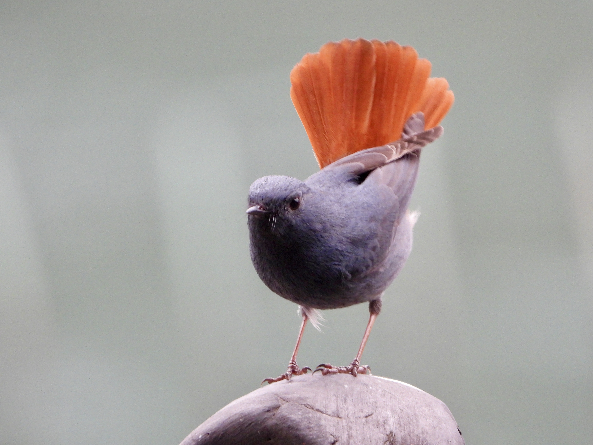
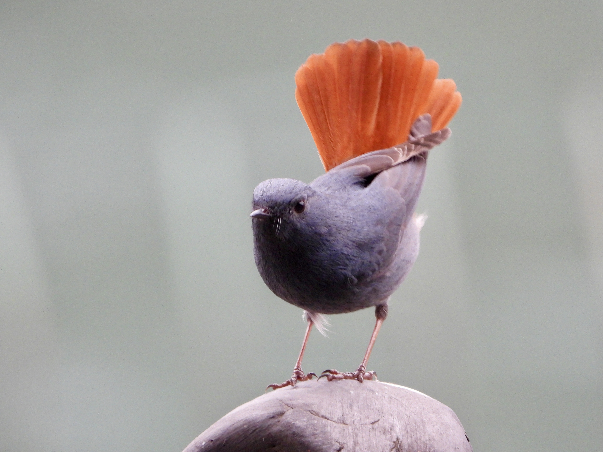
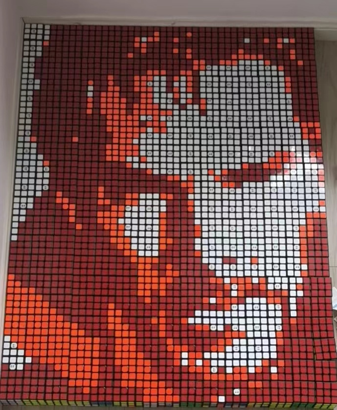
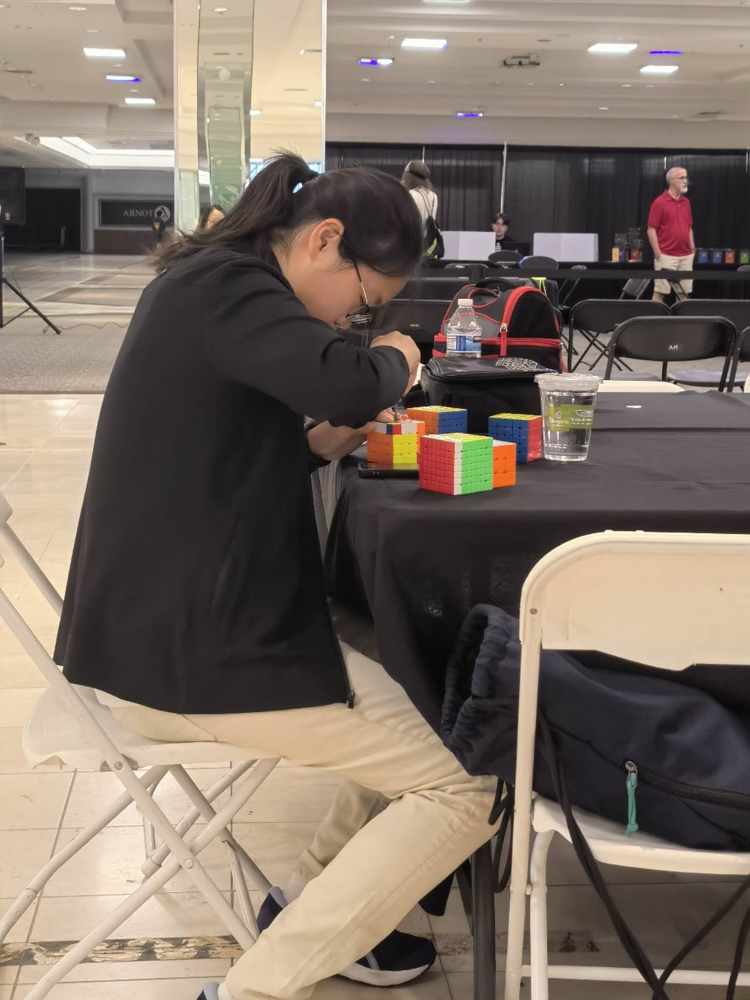
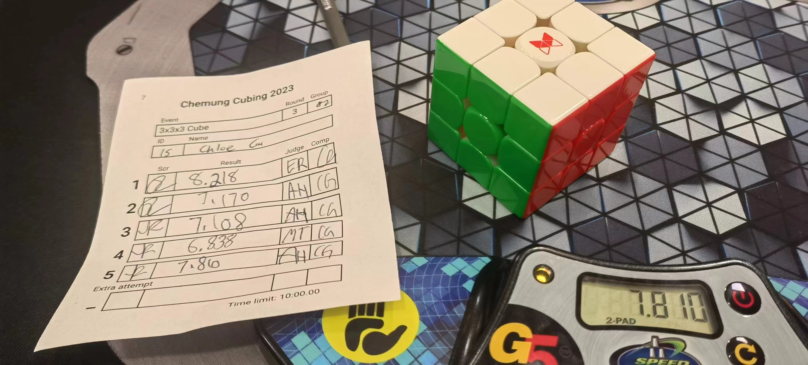

Photography and Birding
Birding has taken me around the world and parks just right beside my home. I have seen around 400+ species of birds to this day, and some of my most memorable species (that I've seen) are Collared Scops Owl and the Japanese Paradise Flycatcher.
 

Speedcubing
I have been speed-solving Rubik's cubes since I was in middle school, and I've known how to solve one since 2nd grade. Currently, I can solve a 3x3 cube in around 7 seconds and 15 seconds one-handed. I've also written tutorials, competed internationally, posted videos online, been a cubing coach, and created Rubik's cube mosaics.


